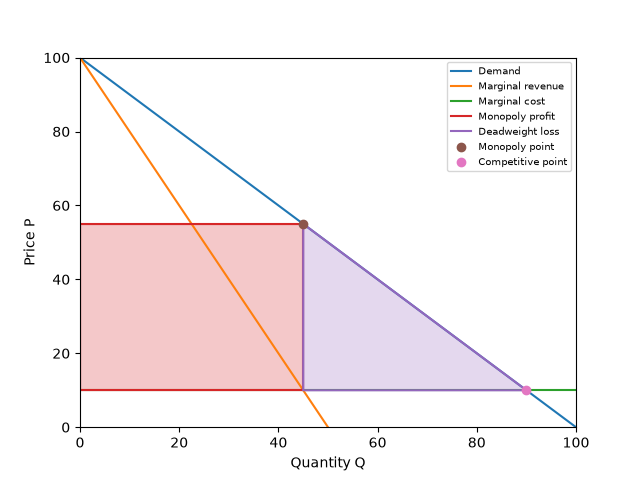
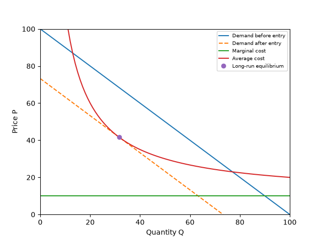
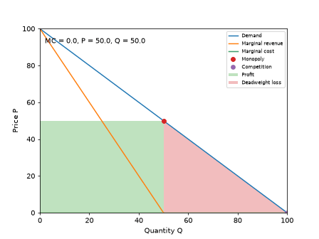

第 11 章: 独占と独占的競争¶
11.1 この章の地図¶
第 3 部までは、売り手も買い手も、価格を与えられたものとして行動する完全競争でした。第 4 部は、その前提が崩れる場面を扱います。この章では、売り手が価格を決められる場合（独占）を調べます。
- 独占企業は、数量を増やすと価格が下がるので、限界収入 MR は価格より低い。線形の需要なら、MR の傾きは需要曲線の2 倍
- 数量は MR = MC で決め、価格は、その数量を買ってもらえる需要曲線の上の価格
- 完全競争（P = MC）に比べて、価格が高く、数量が少なく、死荷重が出る
- 製品が少しずつ違う企業が多数いる独占的競争では、短期の利潤を見て新規参入が起き、需要が左へ動いて、長期には利潤が 0になる

| 項目 | 内容 |
|---|---|
| 経済学の題材 | 限界収入、独占の数量と価格、死荷重、価格弾力性とラーナー指数、独占的競争の長期均衡 |
| 使う Python の機能 | dataclass（frozen=True、@property）、関数、math.sqrt、テスト（pytest） |
| 新しく導入するライブラリ | なし |
| 完成形 | Monopoly、price_at、marginal_revenue、monopoly_outcome、competitive_outcome、deadweight_loss、demand_elasticity、lerner_index、monopolistic_competition_profit、long_run_monopolistic_competition |
| ファイル | 実装: lib/chapter11/monopoly.py、lib/chapter11/plot.py（図）／テスト: test/chapter11/test_monopoly.py、test/chapter11/test_plot.py（自分で書くときは、practice/chapter11/ に、同じ名前で作ります） |
| データ | なし（手計算できる小さな例だけ） |
経済学の式とコードの対応¶
| 経済学 | 式 | コード |
|---|---|---|
| 逆需要 | P = a − b·Q | price_at(monopoly, quantity) |
| 限界収入 | MR = a − 2b·Q | marginal_revenue(monopoly, quantity) |
| 独占の数量 | MR = MC から Q = (a − c) ÷ 2b | monopoly_outcome(monopoly) |
| 完全競争の数量 | P = MC から Q = (a − c) ÷ b | competitive_outcome(monopoly) |
| 死荷重 | 完全競争の総余剰 − 独占の総余剰 | deadweight_loss(monopoly) |
| 価格弾力性 | e = P ÷ (b·Q) | demand_elasticity(monopoly, quantity) |
| ラーナー指数 | (P − MC) ÷ P = 1 ÷ e | lerner_index(monopoly, price) |
| 長期均衡 | 需要の切片 a' = c + 2√(b·F) | long_run_monopolistic_competition(...) |
記号の注意: この章の
a・b・cは、逆需要 P = a − b·Q の切片・傾きと、限界費用です。第 8〜10 章の需要 Q = a + s_d·P（数量を価格で表す式）とは、式の向きが逆です（この記事の読み方を参照）。
前提とする章¶
| できること | 場所 |
|---|---|
| 完全競争の供給（P = MC）と利潤 | この連載の第 7 章 |
| 消費者余剰・総余剰・死荷重 | この連載の第 9 章 |
11.2 準備¶
cd apps/micro-basics-programming/python
uv sync
uv run pytest test/chapter11
39 passed
自分でコードを書くときは、practice/chapter11/ に、monopoly.py とそのテストを作ります。共通の検証関数（validate_positive など）は、第 1 章の完成形から import してかまいません。
11.3 予想する¶
逆需要が P = 100 − Q、限界費用が一定で 10 の、独占企業です。紙で、手計算で答えてください。答えは、この節には書いてありません。「プログラミング」の節の「予想の答え合わせ」で、プログラムを動かして確かめます。
- 限界収入 MR は、Q = 0・20・45 で、いくつですか。需要曲線の価格と比べて、どうなりますか
- 独占企業の数量・価格・利潤は、いくつですか。完全競争のときの数量・価格は、いくつですか
- 総余剰は、独占と完全競争で、それぞれ、いくつですか。死荷重は、いくつですか
- 独占の数量での、需要の価格弾力性は、いくつですか（1 より大きいか小さいか）。ラーナー指数（P − MC）÷ P は、いくつですか。弾力性と、どんな関係がありますか
- 独占的競争で、固定費用が 1000 のとき、短期の利潤は、いくつですか。長期に、新規参入が起きると、需要はどちらへ動き、利潤はいくつに落ち着きますか
11.4 独占と独占的競争の考え方¶
限界収入¶
売り手は、数量を 1 単位増やすと、その 1 単位の価格を得ますが、それまでの全部の価格も下がります。だから、限界収入は、価格より低くなります。逆需要が P = a − b·Q なら、総収入は P·Q = a·Q − b·Q² で、限界収入は MR = a − 2b·Q です。傾きが、需要曲線の 2 倍です。
独占の決め方¶
利潤最大の条件は MR = MC です。完全競争の企業は、P = MR なので P = MC でしたが、独占企業は MR が価格より低いので、P > MC になります。決めるのは数量で、価格は、その数量を買ってもらえる、需要曲線の上の値です。
死荷重¶
独占の数量は、完全競争より少ないので、買い手の価値が費用を上回るのに、作られない取引が出ます。それが死荷重（三角形）です。
弾力性とラーナー指数¶
MR = MC を、P と弾力性 e で書くと、(P − MC) ÷ P = 1 ÷ e になります。これがラーナー指数で、独占力（価格の上乗せの割合）を表します。弾力性が小さいほど、上乗せは大きい。独占企業は、需要が弾力的な（e ≥ 1）範囲でしか、作りません（MR が負にならないため）。
独占的競争¶
製品が少しずつ違う企業が多数いて、参入が自由な市場です。各企業は、自分の製品の需要に対して、独占企業のように行動します。短期に利潤が出れば新規参入が起き、各企業の需要が左へ動いて、長期には利潤が 0になります。そのとき、価格は平均費用に等しく、かつ限界費用より高い（P > MC）ので、完全競争より、数量が少なくなります。
11.5 プログラミング¶
Red: 逆需要と限界収入のテスト¶
最初のテストを書きます。逆需要 P = 100 − Q は、Q = 0 で 100、Q = 45 で 55 です。限界収入は、Q = 0 で 100、Q = 45 で 10 で、傾きが 2 倍です。
import math
import pytest
from lib.chapter11.monopoly import (
Monopoly,
competitive_outcome,
deadweight_loss,
demand_elasticity,
lerner_index,
long_run_monopolistic_competition,
marginal_revenue,
monopolistic_competition_profit,
monopoly_outcome,
price_at,
)
MONOPOLY = Monopoly(demand_intercept=100, demand_slope=1, marginal_cost=10)
def test_逆需要は数量が増えると価格が下がる() -> None:
assert price_at(MONOPOLY, 0) == 100
assert price_at(MONOPOLY, 45) == 55
assert price_at(MONOPOLY, 100) == 0
def test_需要の範囲外の数量はエラー() -> None:
with pytest.raises(ValueError, match="数量"):
price_at(MONOPOLY, -1)
with pytest.raises(ValueError, match="数量"):
price_at(MONOPOLY, 101)
def test_限界収入は需要曲線の2倍の傾き() -> None:
assert marginal_revenue(MONOPOLY, 0) == 100
assert marginal_revenue(MONOPOLY, 45) == 10
drop_price = price_at(MONOPOLY, 10) - price_at(MONOPOLY, 20)
drop_revenue = marginal_revenue(MONOPOLY, 10) - marginal_revenue(MONOPOLY, 20)
assert drop_revenue == 2 * drop_price
def test_傾きが違う需要の限界収入() -> None:
steep = Monopoly(demand_intercept=100, demand_slope=2, marginal_cost=10)
assert marginal_revenue(steep, 10) == 100 - 4 * 10
Monopoly などがまだないので、テストは失敗します（Red）。テストの import は、書いた関数だけを、1 つずつ足してかまいません（第 5 章の注意を参照）。
Green: 独占を実装する¶
需要の仮定（傾きは正、限界費用は 0 以上、切片は限界費用より大きい）は、__post_init__ で、作るときに検査します。
@dataclass(frozen=True)
class Monopoly:
"""逆需要 P = a − b·Q と、一定の限界費用。"""
demand_intercept: float
demand_slope: float
marginal_cost: float
def __post_init__(self) -> None:
validate_positive(self.demand_slope, "需要の傾きは、正にする")
validate_non_negative(self.marginal_cost, "限界費用は、0 以上にする")
if self.demand_intercept <= self.marginal_cost:
raise ValueError("需要の切片（最高の価格）は、限界費用より大きくする")
def price_at(monopoly: Monopoly, quantity: float) -> float:
"""数量 Q を買ってもらえる、最高の価格（逆需要）。P = a − b·Q。"""
if quantity < 0 or quantity > monopoly.demand_intercept / monopoly.demand_slope:
raise ValueError("数量は、0 以上、需要の数量の切片以下にする")
return monopoly.demand_intercept - monopoly.demand_slope * quantity
def marginal_revenue(monopoly: Monopoly, quantity: float) -> float:
"""限界収入 MR = a − 2b·Q。1 単位多く売ると、価格が下がるので、価格より低い。"""
validate_non_negative(quantity, "数量は、0 以上にする")
return monopoly.demand_intercept - 2 * monopoly.demand_slope * quantity
import と補助関数（写すときに足す）
記事の抜粋には、import と、先頭が _ の補助関数・定数を、省いています。完成形のファイルの先頭にある、次の部分を、写してください。
lib/chapter11/monopoly.py
import math
from dataclasses import dataclass
from lib.chapter01.validation import validate_non_negative, validate_positive
def _outcome(monopoly: Monopoly, quantity: float) -> MarketOutcome:
price = price_at(monopoly, quantity)
return MarketOutcome(
price,
quantity,
(price - monopoly.marginal_cost) * quantity,
0.5 * (monopoly.demand_intercept - price) * quantity,
)
lib/chapter11/plot.py
import matplotlib.pyplot as plt
from matplotlib.axes import Axes
from matplotlib.figure import Figure
from lib.chapter09.plot import outline_area
from lib.chapter11.monopoly import (
Monopoly,
competitive_outcome,
long_run_monopolistic_competition,
monopoly_outcome,
)
_POINTS = 100
def _demand_line(
ax: Axes, intercept: float, slope: float, label: str, linestyle: str = "-"
) -> None:
ax.plot([0, intercept / slope], [intercept, 0], label=label, linestyle=linestyle)
def _style(ax: Axes, q_max: float, p_max: float) -> None:
ax.set_xlabel("Quantity Q")
ax.set_ylabel("Price P")
ax.set_xlim(0, q_max)
ax.set_ylim(0, p_max)
ax.legend(fontsize="x-small")
test/chapter11/test_plot.py
import math
from collections.abc import Sequence
from typing import cast
import pytest
from matplotlib.axes import Axes
from matplotlib.lines import Line2D
from lib.chapter11.monopoly import Monopoly
from lib.chapter11.plot import plot_long_run, plot_monopoly
独占の数量と価格¶
MR = MC の点が、独占の数量です。結果は、価格・数量・利潤・消費者余剰を持つ MarketOutcome にまとめ、総余剰は、@property で、消費者余剰と利潤の和にします。
def test_独占の数量と価格は限界収入と限界費用が等しい点() -> None:
outcome = monopoly_outcome(MONOPOLY)
assert outcome.quantity == 45
assert outcome.price == 55
assert marginal_revenue(MONOPOLY, outcome.quantity) == MONOPOLY.marginal_cost
def test_独占の利潤と消費者余剰() -> None:
outcome = monopoly_outcome(MONOPOLY)
assert outcome.profit == 2025
assert outcome.consumer_surplus == pytest.approx(1012.5)
assert outcome.total_surplus == pytest.approx(3037.5)
def test_完全競争では価格は限界費用で数量は多い() -> None:
outcome = competitive_outcome(MONOPOLY)
assert outcome.price == 10
assert outcome.quantity == 90
assert outcome.profit == 0
assert outcome.consumer_surplus == pytest.approx(4050)
assert outcome.total_surplus == pytest.approx(4050)
def test_独占は完全競争より価格が高く数量が少ない() -> None:
mono, comp = monopoly_outcome(MONOPOLY), competitive_outcome(MONOPOLY)
assert mono.price > comp.price
assert mono.quantity < comp.quantity
@dataclass(frozen=True)
class MarketOutcome:
"""価格・数量・利潤・消費者余剰。総余剰 = 消費者余剰 + 利潤。"""
price: float
quantity: float
profit: float
consumer_surplus: float
@property
def total_surplus(self) -> float:
"""総余剰 = 消費者余剰 + 利潤。"""
return self.consumer_surplus + self.profit
def _outcome(monopoly: Monopoly, quantity: float) -> MarketOutcome:
price = price_at(monopoly, quantity)
return MarketOutcome(
price,
quantity,
(price - monopoly.marginal_cost) * quantity,
0.5 * (monopoly.demand_intercept - price) * quantity,
)
def monopoly_outcome(monopoly: Monopoly) -> MarketOutcome:
"""独占の結果。MR = MC から、Q = (a − c) ÷ 2b。"""
quantity = (monopoly.demand_intercept - monopoly.marginal_cost) / (
2 * monopoly.demand_slope
)
return _outcome(monopoly, quantity)
def competitive_outcome(monopoly: Monopoly) -> MarketOutcome:
"""完全競争の結果。P = MC から、Q = (a − c) ÷ b。利潤は 0。"""
quantity = (
monopoly.demand_intercept - monopoly.marginal_cost
) / monopoly.demand_slope
return _outcome(monopoly, quantity)
数量は、独占が 45、完全競争が 90 で、ちょうど半分です（線形の需要と一定の限界費用のとき）。価格は 55 と 10。独占の利潤は (55 − 10) × 45 = 2025、消費者余剰は 1012.5 です。
死荷重¶
def test_独占の死荷重は総余剰の差() -> None:
assert deadweight_loss(MONOPOLY) == pytest.approx(1012.5)
assert deadweight_loss(MONOPOLY) == pytest.approx(
competitive_outcome(MONOPOLY).total_surplus
- monopoly_outcome(MONOPOLY).total_surplus
)
def test_限界費用が高い独占() -> None:
high = Monopoly(demand_intercept=100, demand_slope=1, marginal_cost=40)
assert (monopoly_outcome(high).quantity, monopoly_outcome(high).price) == (30, 70)
assert (competitive_outcome(high).quantity, competitive_outcome(high).price) == (
60,
40,
)
def test_傾きが違う需要の独占() -> None:
steep = Monopoly(demand_intercept=100, demand_slope=2, marginal_cost=10)
outcome = monopoly_outcome(steep)
assert (outcome.quantity, outcome.price) == (22.5, 55)
assert competitive_outcome(steep).quantity == 45
def test_限界費用0なら独占は需要曲線の中点で作る() -> None:
free = Monopoly(demand_intercept=100, demand_slope=1, marginal_cost=0)
outcome = monopoly_outcome(free)
assert (outcome.quantity, outcome.price) == (50, 50)
assert demand_elasticity(free, outcome.quantity) == pytest.approx(1)
def test_独占の仮定のチェック() -> None:
with pytest.raises(ValueError, match="傾き"):
Monopoly(100, 0, 10)
with pytest.raises(ValueError, match="限界費用"):
Monopoly(100, 1, -1)
with pytest.raises(ValueError, match="切片"):
Monopoly(10, 1, 10)
def deadweight_loss(monopoly: Monopoly) -> float:
"""独占の死荷重 = 完全競争の総余剰 − 独占の総余剰。"""
return (
competitive_outcome(monopoly).total_surplus
- monopoly_outcome(monopoly).total_surplus
)
総余剰は、完全競争が 4050、独占が 3037.5（消費者余剰 1012.5 + 利潤 2025）で、死荷重は 1012.5 です。傾きが 2 の需要では、独占の数量は 22.5、完全競争は 45 と、やはり半分です。
弾力性とラーナー指数¶
def test_価格弾力性は価格を数量と傾きで割った値() -> None:
assert demand_elasticity(MONOPOLY, 45) == pytest.approx(55 / 45)
assert demand_elasticity(MONOPOLY, 90) == pytest.approx(10 / 90)
def test_弾力性は数量が正でなければ求められない() -> None:
with pytest.raises(ValueError, match="数量"):
demand_elasticity(MONOPOLY, 0)
def test_独占は需要が弾力的な範囲で作る() -> None:
assert demand_elasticity(MONOPOLY, monopoly_outcome(MONOPOLY).quantity) > 1
def test_ラーナー指数は価格の上乗せの割合で弾力性の逆数() -> None:
outcome = monopoly_outcome(MONOPOLY)
assert lerner_index(MONOPOLY, outcome.price) == pytest.approx(45 / 55)
assert lerner_index(MONOPOLY, outcome.price) == pytest.approx(
1 / demand_elasticity(MONOPOLY, outcome.quantity)
)
assert lerner_index(MONOPOLY, MONOPOLY.marginal_cost) == 0
def test_ラーナー指数の価格は正でなければエラー() -> None:
with pytest.raises(ValueError, match="価格"):
lerner_index(MONOPOLY, 0)
def demand_elasticity(monopoly: Monopoly, quantity: float) -> float:
"""需要の価格弾力性（大きさ）e = P ÷ (b·Q)。"""
validate_positive(quantity, "数量は、正にする")
return price_at(monopoly, quantity) / (monopoly.demand_slope * quantity)
def lerner_index(monopoly: Monopoly, price: float) -> float:
"""ラーナー指数 (P − MC) ÷ P。独占力の大きさ。利潤最大なら、弾力性の逆数。"""
validate_positive(price, "価格は、正にする")
return (price - monopoly.marginal_cost) / price
独占的競争¶
固定費用 F を持つ企業が、独占企業のように行動するとき、短期の利潤は、独占の利潤から F を引いた値です。利潤が正なら、新規参入が起きます。
def test_独占的競争の短期の利潤は固定費用を引いた値() -> None:
assert monopolistic_competition_profit(MONOPOLY, 1000) == 1025
assert monopolistic_competition_profit(MONOPOLY, 2025) == 0
assert monopolistic_competition_profit(MONOPOLY, 3000) == -975
def test_長期には新規参入で利潤が0になり価格は平均費用に等しい() -> None:
long_run = long_run_monopolistic_competition(
marginal_cost=10, demand_slope=1, fixed_cost=1000
)
assert long_run.quantity == pytest.approx(math.sqrt(1000))
assert long_run.price == pytest.approx(10 + math.sqrt(1000))
average_cost = 10 + 1000 / long_run.quantity
assert long_run.price == pytest.approx(average_cost)
assert long_run.profit == pytest.approx(0, abs=1e-9)
def test_長期の需要曲線は参入で左へ動く() -> None:
long_run = long_run_monopolistic_competition(10, 1, 1000)
assert long_run.demand_intercept == pytest.approx(10 + 2 * math.sqrt(1000))
assert long_run.demand_intercept < MONOPOLY.demand_intercept
def test_長期に利潤が0になる需要では短期の利潤も0() -> None:
long_run = long_run_monopolistic_competition(10, 1, 2025)
assert long_run.demand_intercept == pytest.approx(100)
after = Monopoly(long_run.demand_intercept, 1, 10)
assert monopolistic_competition_profit(after, 2025) == pytest.approx(0, abs=1e-9)
def test_独占的競争の長期の価格は限界費用より高い() -> None:
long_run = long_run_monopolistic_competition(10, 1, 1000)
assert long_run.price > 10
assert long_run.price - 10 == pytest.approx(math.sqrt(1000))
def test_独占的競争の仮定のチェック() -> None:
with pytest.raises(ValueError, match="固定費用"):
long_run_monopolistic_competition(10, 1, 0)
with pytest.raises(ValueError, match="傾き"):
long_run_monopolistic_competition(10, 0, 1000)
with pytest.raises(ValueError, match="限界費用"):
long_run_monopolistic_competition(-1, 1, 1000)
def monopolistic_competition_profit(monopoly: Monopoly, fixed_cost: float) -> float:
"""独占的競争の、短期の利潤 = 独占の利潤 − 固定費用。正なら、新規参入が起きる。"""
return monopoly_outcome(monopoly).profit - fixed_cost
@dataclass(frozen=True)
class LongRunResult:
"""独占的競争の長期均衡。参入で、需要が左へ動き、利潤が 0 になる。"""
price: float
quantity: float
demand_intercept: float
profit: float
def long_run_monopolistic_competition(
marginal_cost: float, demand_slope: float, fixed_cost: float
) -> LongRunResult:
"""長期均衡。参入で、需要の切片が a' に下がり、独占の利潤が 0 になる。
利潤 (a' − c)² ÷ 4b が、固定費用 F に等しいので、a' = c + 2√(b·F)。
数量は √(F ÷ b)、価格は c + √(b·F)。価格は、平均費用 c + F ÷ q に等しい。
"""
validate_non_negative(marginal_cost, "限界費用は、0 以上にする")
validate_positive(demand_slope, "需要の傾きは、正にする")
validate_positive(fixed_cost, "固定費用は、正にする")
root = math.sqrt(demand_slope * fixed_cost)
quantity = math.sqrt(fixed_cost / demand_slope)
price = marginal_cost + root
return LongRunResult(
price,
quantity,
marginal_cost + 2 * root,
(price - marginal_cost) * quantity - fixed_cost,
)
長期の条件は、独占の利潤 (a' − c)² ÷ 4b が F に等しいことです。そこから a' = c + 2√(b·F)、数量 √(F ÷ b)、価格 c + √(b·F) が出ます。価格は平均費用 c + F ÷ q に等しくなります。
予想の答え合わせ¶
予想した答えを、プログラムで確かめます。
このスクリプトは、完成形（
lib/）を読みます。自分のコードで確かめるときは、import を、from practice.chapterNN...に書き換えてください。
from lib.chapter11.monopoly import (
Monopoly,
competitive_outcome,
deadweight_loss,
demand_elasticity,
lerner_index,
long_run_monopolistic_competition,
marginal_revenue,
monopolistic_competition_profit,
monopoly_outcome,
)
monopoly = Monopoly(demand_intercept=100, demand_slope=1, marginal_cost=10)
print("限界収入 Q=0, 20, 45:", [marginal_revenue(monopoly, q) for q in (0, 20, 45)])
m, c = monopoly_outcome(monopoly), competitive_outcome(monopoly)
print("独占: 数量", m.quantity, "価格", m.price, "利潤", m.profit, "消費者余剰", m.consumer_surplus)
print("完全競争: 数量", c.quantity, "価格", c.price, "消費者余剰", c.consumer_surplus)
print("総余剰 独占・完全競争:", m.total_surplus, c.total_surplus, "死荷重", deadweight_loss(monopoly))
e = demand_elasticity(monopoly, m.quantity)
print("独占点の弾力性", round(e, 4), "ラーナー指数", round(lerner_index(monopoly, m.price), 4), "弾力性の逆数", round(1 / e, 4))
print("短期の利潤 固定費用 1000:", monopolistic_competition_profit(monopoly, 1000))
r = long_run_monopolistic_competition(marginal_cost=10, demand_slope=1, fixed_cost=1000)
print("長期: 数量", round(r.quantity, 4), "価格", round(r.price, 4), "需要の切片", round(r.demand_intercept, 4), "利潤", round(r.profit, 6))
限界収入 Q=0, 20, 45: [100, 60, 10]
独占: 数量 45.0 価格 55.0 利潤 2025.0 消費者余剰 1012.5
完全競争: 数量 90.0 価格 10.0 消費者余剰 4050.0
総余剰 独占・完全競争: 3037.5 4050.0 死荷重 1012.5
独占点の弾力性 1.2222 ラーナー指数 0.8182 弾力性の逆数 0.8182
短期の利潤 固定費用 1000: 1025.0
長期: 数量 31.6228 価格 41.6228 需要の切片 73.2456 利潤 0.0
- 1 つ目の問い: 限界収入は、100・60・10。価格（100・80・55）より低く、需要曲線の 2 倍の傾きで下がります
- 2 つ目の問い: 独占は、数量 45・価格 55・利潤 2025。完全競争は、数量 90・価格 10 です
- 3 つ目の問い: 総余剰は、独占 3037.5、完全競争 4050。死荷重は 1012.5 です
- 4 つ目の問い: 弾力性は約 1.22（1 より大きい）、ラーナー指数は約 0.818 で、弾力性の逆数と一致します
- 5 つ目の問い: 短期の利潤は 1025 で、参入が起きます。長期には、需要が左へ動き（切片が 100 から約 73.2 へ）、数量は約 31.6、価格は約 41.6 で、利潤は 0 です
図¶
独占の図は、利潤の長方形と死荷重の三角形の、面積を確かめるテストを持ちます。面積は、輪郭線と同じ色で、半透明に塗ります（第 9 章の outline_area を再利用します）。
描画のテストと実装（後回しにしても、学習は成り立ちます）
MONOPOLY = Monopoly(100, 1, 10)
def xs(line: Line2D) -> list[float]:
return [float(v) for v in cast(Sequence[float], line.get_xdata())]
def ys(line: Line2D) -> list[float]:
return [float(v) for v in cast(Sequence[float], line.get_ydata())]
def line(ax: Axes, label: str) -> Line2D:
return next(item for item in ax.lines if item.get_label() == label)
def area(item: Line2D) -> float:
"""閉じた折れ線の面積（靴ひも公式）。"""
x, y = xs(item), ys(item)
total = sum(x[i] * y[i + 1] - x[i + 1] * y[i] for i in range(len(x) - 1))
return abs(total) / 2
def monopoly() -> Axes:
return plot_monopoly(MONOPOLY, 100, 100).axes[0]
def test_独占の図の線() -> None:
assert [item.get_label() for item in monopoly().lines] == [
"Demand",
"Marginal revenue",
"Marginal cost",
"Monopoly profit",
"Deadweight loss",
"Monopoly point",
"Competitive point",
]
def test_限界収入は需要曲線の2倍の傾き() -> None:
ax = monopoly()
demand, revenue = line(ax, "Demand"), line(ax, "Marginal revenue")
assert (xs(demand), ys(demand)) == ([0, 100], [100, 0])
assert (xs(revenue), ys(revenue)) == ([0, 50], [100, 0])
def test_限界費用は水平線() -> None:
cost = line(monopoly(), "Marginal cost")
assert ys(cost) == [10, 10]
assert xs(cost) == [0, 100]
def test_独占点と競争点() -> None:
ax = monopoly()
mono, comp = line(ax, "Monopoly point"), line(ax, "Competitive point")
assert (xs(mono)[0], ys(mono)[0]) == (45, 55)
assert (xs(comp)[0], ys(comp)[0]) == (90, 10)
def test_独占の利潤の長方形と死荷重の三角形の面積() -> None:
ax = monopoly()
assert area(line(ax, "Monopoly profit")) == pytest.approx(2025)
assert area(line(ax, "Deadweight loss")) == pytest.approx(1012.5)
def test_面積は塗られている() -> None:
ax = monopoly()
assert len(ax.patches) == 2
for patch in ax.patches:
assert patch.get_alpha() == pytest.approx(0.25)
def test_独占の図の軸と凡例() -> None:
ax = monopoly()
assert ax.get_xlabel() == "Quantity Q"
assert ax.get_ylabel() == "Price P"
assert ax.get_xlim() == (0, 100)
assert ax.get_ylim() == (0, 100)
assert ax.get_legend() is not None
def plot_monopoly(monopoly: Monopoly, q_max: float, p_max: float) -> Figure:
"""需要・限界収入・限界費用と、独占の利潤の長方形・死荷重の三角形を描く。"""
a, b, c = monopoly.demand_intercept, monopoly.demand_slope, monopoly.marginal_cost
mono, comp = monopoly_outcome(monopoly), competitive_outcome(monopoly)
fig, ax = plt.subplots()
_demand_line(ax, a, b, "Demand")
ax.plot([0, a / (2 * b)], [a, 0], label="Marginal revenue")
ax.plot([0, q_max], [c, c], label="Marginal cost")
q, p = mono.quantity, mono.price
outline_area(ax, [0, q, q, 0, 0], [p, p, c, c, p], "Monopoly profit")
outline_area(ax, [q, q, comp.quantity, q], [p, c, c, p], "Deadweight loss")
ax.plot([q], [p], "o", label="Monopoly point")
ax.plot([comp.quantity], [comp.price], "o", label="Competitive point")
_style(ax, q_max, p_max)
plt.close(fig)
return fig
独占的競争の長期均衡です。需要が参入で左へ動き（点線）、価格が平均費用に等しい点で、利潤が 0 になります。

描画のテストと実装（後回しにしても、学習は成り立ちます）
def long_run() -> Axes:
return plot_long_run(MONOPOLY, 1000, 100, 100).axes[0]
def test_独占的競争の図の線() -> None:
assert [item.get_label() for item in long_run().lines] == [
"Demand before entry",
"Demand after entry",
"Marginal cost",
"Average cost",
"Long-run equilibrium",
]
def test_参入後の需要は点線で左へ動く() -> None:
ax = long_run()
after = line(ax, "Demand after entry")
assert after.get_linestyle() == "--"
assert ys(after)[0] == pytest.approx(10 + 2 * math.sqrt(1000))
assert ys(after)[0] < ys(line(ax, "Demand before entry"))[0]
assert line(ax, "Demand before entry").get_linestyle() == "-"
def test_長期均衡で価格は平均費用に等しい() -> None:
ax = long_run()
point = line(ax, "Long-run equilibrium")
q, p = xs(point)[0], ys(point)[0]
assert q == pytest.approx(math.sqrt(1000))
assert p == pytest.approx(10 + 1000 / q)
def test_平均費用の曲線は100点で右下がり() -> None:
average = line(long_run(), "Average cost")
assert len(xs(average)) == 100
assert xs(average)[0] == pytest.approx(1)
assert xs(average)[-1] == pytest.approx(100)
for q, cost in zip(xs(average), ys(average), strict=True):
assert cost == pytest.approx(10 + 1000 / q)
assert all(a > b for a, b in zip(ys(average), ys(average)[1:], strict=False))
def test_独占的競争の図の軸と凡例() -> None:
ax = long_run()
assert ax.get_xlim() == (0, 100)
assert ax.get_ylim() == (0, 100)
assert ax.get_legend() is not None
def plot_long_run(
monopoly: Monopoly, fixed_cost: float, q_max: float, p_max: float
) -> Figure:
"""独占的競争。参入で需要が左へ動き（点線）、価格が平均費用に等しい点で利潤 0。"""
b, c = monopoly.demand_slope, monopoly.marginal_cost
result = long_run_monopolistic_competition(c, b, fixed_cost)
qs = [q_max * (i + 1) / _POINTS for i in range(_POINTS)]
fig, ax = plt.subplots()
_demand_line(ax, monopoly.demand_intercept, b, "Demand before entry")
_demand_line(ax, result.demand_intercept, b, "Demand after entry", linestyle="--")
ax.plot([0, q_max], [c, c], label="Marginal cost")
ax.plot(qs, [c + fixed_cost / q for q in qs], label="Average cost")
ax.plot([result.quantity], [result.price], "o", label="Long-run equilibrium")
_style(ax, q_max, p_max)
plt.close(fig)
return fig
動かして見る¶
限界費用を 0 から 40 へ上げます。MR = MC の点が動き、独占の価格と数量が変わります。利潤（緑）と死荷重（赤）の大きさも変わります。

このアニメーションは、lib/animations/ の関数で作っています（uv run python -m tools.render_animations で、GIF を書き出します）。写経は、不要です。動きを見て、式と図の対応を、確かめてください。
実行結果¶
uv run pytest test/chapter11
39 passed
11.6 規則で言うと¶
- 限界収入は、価格より低い。 線形の需要なら、傾きは 2 倍
- 独占は MR = MC で数量を決める。 完全競争より、価格が高く、数量が少なく、死荷重が出る
- 独占的競争は、参入で利潤が 0 になる。 価格は平均費用に等しいが、限界費用より高い
混同しやすい点を、表にまとめます。
| 混同しやすい点 | 違い |
|---|---|
| 限界収入と価格 | 完全競争では MR = P。独占では MR < P（数量を増やすと、価格が下がる） |
| 独占の価格と、MR = MC の点 | MR = MC で決まるのは数量。価格は、その数量での、需要曲線の上の値 |
| 独占の利潤と死荷重 | 利潤は、売り手の得（移転）。死荷重は、誰の得にもならない損失 |
| 独占的競争と完全競争 | どちらも長期の利潤は 0。ただし、独占的競争は P > MC で、数量が少ない（完全競争は P = MC） |
このモデルが成り立たない場面¶
- 一定の限界費用・線形の需要を仮定しました。 規模の経済・費用逓減では、結果が変わります（第 15 章の自然独占）
- 価格差別を、考えていません。 買い手ごとに価格を変えられれば（完全価格差別なら）、死荷重はなくなります（利潤は、さらに大きくなります）
- 参入の脅威・規制を、考えていません。 新規参入が見込まれれば、独占企業も価格を下げます
- 静的なモデルです。 技術革新（シュンペーター）の、動学的な効果は、含みません
11.7 練習問題¶
| 種類 | 問題 |
|---|---|
| 想起 | 本文を閉じて、monopoly_outcome の最初のテスト（P = 100 − Q、限界費用 10 で、数量 45・価格 55）を書いてください |
| 生成 | 解説を見る前に、独占の利潤と完全競争の利潤の差を返す monopoly_profit_premium(monopoly) を、テストから書いてください。この例では 2025 です |
| 多様 | 限界費用を 10 から 40 に上げます。独占の価格と数量は、どうなりますか。先に予想してから、確かめてください |
| 交互 | 第 1 シリーズの第 3 章のリスト内包表記で、限界費用 0・10・20・30・40 の独占価格を、一度に求めてください。限界費用が 10 上がると、価格は、いくら上がりますか |
解答（先に自分で取り組んでから、開いてください）
想起:
def test_練習問題の独占の最初のテスト() -> None:
outcome = monopoly_outcome(Monopoly(100, 1, 10))
assert (outcome.quantity, outcome.price) == (45, 55)
生成: 独占の利潤から、完全競争の利潤（0）を引きます。
def monopoly_profit_premium(monopoly):
return monopoly_outcome(monopoly).profit - competitive_outcome(monopoly).profit
def test_練習問題の独占の利潤の上乗せ() -> None:
assert monopoly_profit_premium(Monopoly(100, 1, 10)) == 2025
多様: 限界費用 40 では、数量は (100 − 40) ÷ 2 = 30、価格は 70 です。限界費用が 30 上がると、価格は 15 上がります（上がり方は半分）。
def test_練習問題の限界費用が上がった独占() -> None:
outcome = monopoly_outcome(Monopoly(100, 1, 40))
assert (outcome.quantity, outcome.price) == (30, 70)
交互:
def test_練習問題の限界費用と独占価格() -> None:
prices = [monopoly_outcome(Monopoly(100, 1, c)).price for c in (0, 10, 20, 30, 40)]
assert prices == [50, 55, 60, 65, 70]
11.8 振り返り¶
- うまくいったこと:
- 詰まったこと:
- 次に試すこと:
11.9 まとめ¶
- 独占企業の限界収入は、価格より低く、線形の需要なら傾きは 2 倍。MR = MC で数量を決め、価格は需要曲線の上で決まる
- 完全競争に比べて、価格が高く、数量が少なく、死荷重が出る。ラーナー指数は、弾力性の逆数で、独占力の大きさを表す
- 独占的競争では、短期の利潤が新規参入を呼び、需要が左へ動いて、長期には利潤が 0 になる。価格は平均費用に等しい
次の章では、売り手が少数の市場（寡占）を調べます。相手の出方を読み合う状況を、利得表で表し、支配戦略・ナッシュ均衡・囚人のジレンマを求めます。繰り返しゲームで、協調が続く条件（割引因子の閾値）も、確かめます。